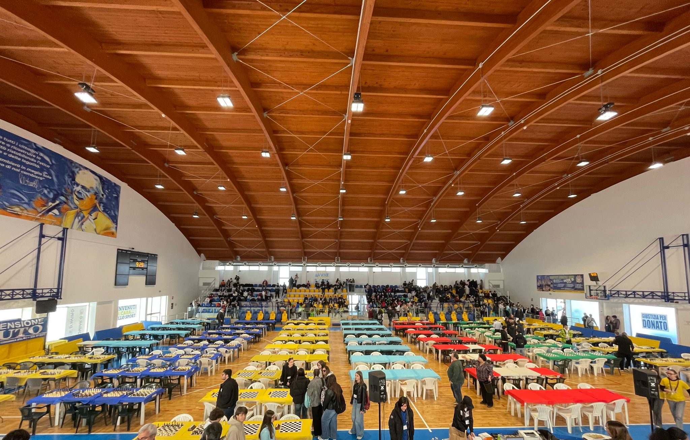
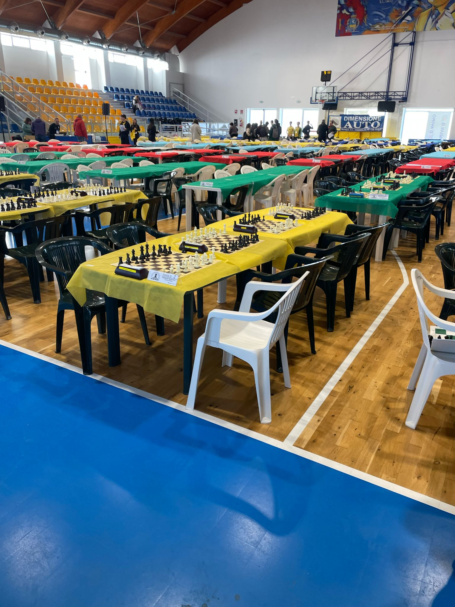
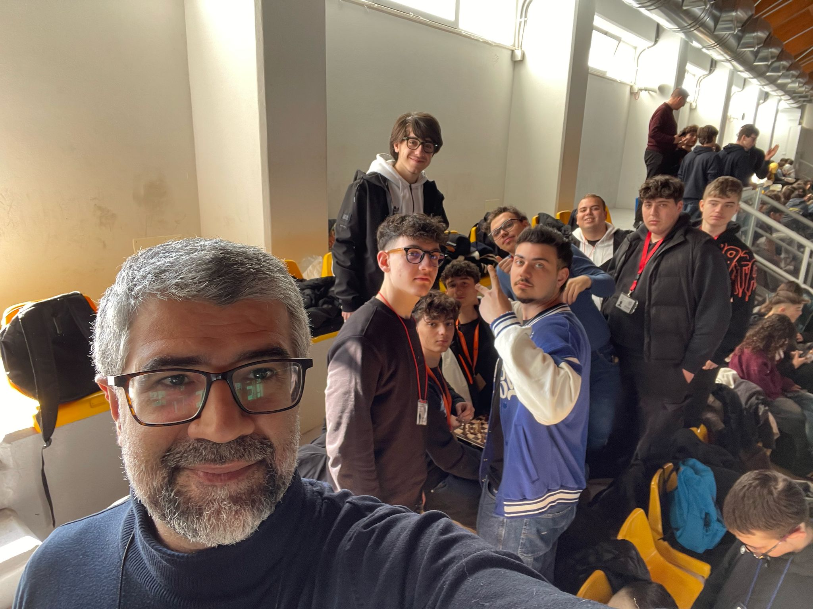
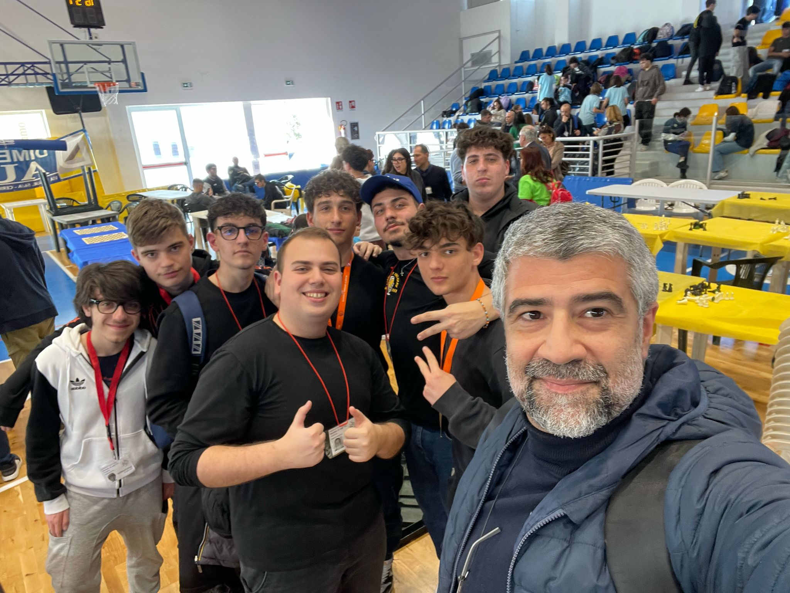
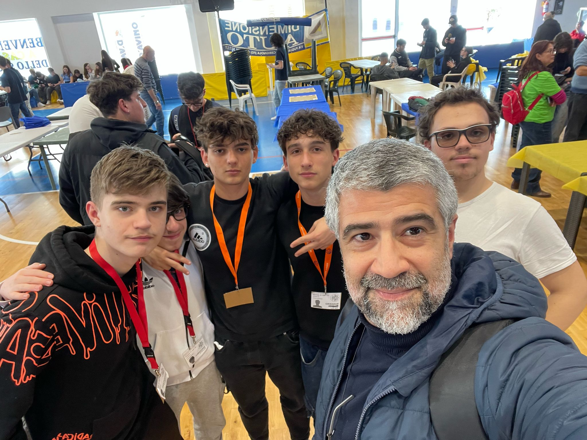

| Home |
Il 5 aprile 2025 rimarrà inciso sulla mia personale tavola di gioco come la mossa d’apertura di una nuova avventura: il mio primo torneo di scacchi. Dopo aver ripreso da poco il nobile gioco, ho avuto l’onore di partecipare ai Campionati Regionali Studenteschi a Cerignola.
Il viaggio verso la sede del torneo è stato un’allegra cavalcata d’apertura, condivisa con i miei compagni di squadra tra risate e tensioni celate dietro sorrisi e aneddoti. All’arrivo, il palazzetto ci ha accolti come una scacchiera vivente, piena di giovani menti pronte a darsi battaglia sul legno profumato dei 64 quadrati.
Nel riscaldamento pre-torneo, le prime partite amichevoli hanno servito da arrocco mentale, sciogliendo l’emozione e preparando lo spirito alla sfida imminente. Sebbene fossi stato schierato come prima riserva, non mi sono mai sentito un pedone secondario: ero pronto a giocare ogni partita con la stessa determinazione di un alfiere in diagonale sull'intera scacchiera.
Tra i match più intensi, spicca lo scontro con Jatta Francesco, un avversario di rango 1ª Nazionale e persona squisita. La nostra è stata una partita posizionale molto combattuta, dove ogni mossa era un duello di idee. Alla fine, ha prevalso la sua esperienza, ma ne sono uscito arricchito e motivato.
Purtroppo, come in ogni finale impreciso, anche la nostra squadra ha subito un colpo inaspettato. Un errore tecnico, lo scambio involontario di scacchiera tra me e un amico, ci è costato un punto cruciale. Una vittoria si è trasformata in pareggio, e la nostra promozione verso le Nazionali di Cervia è sfumata per un soffio.
Nonostante ciò, questa prima esperienza è stata un gambetto ben riuscito: ho stretto nuove amicizie, mi sono divertito, e soprattutto ho consolidato il mio amore per il gioco. Ora guardo al futuro con lo sguardo di un re deciso: sono pronto a partecipare a nuovi tornei, affilare le mie strategie e, mossa dopo mossa, conquistare la vittoria.
|  |
|  |
|  |
|  |
|  |